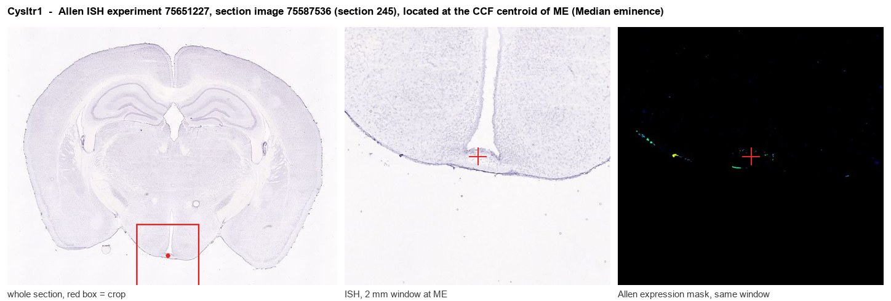

Cysltr1
Cysteinyl leukotriene receptor 1 (CysLTR1) (Cysteinyl leukotriene D4 receptor) (LTD4 receptor)
Spatial tier: STRICT_EXCLUSIVE · Class: GPCR · Top region: ME (Median eminence) · Positive regions: 3/554
49.7Discovery Score
37.9Targetability Score
CEvidence grade C
What this means: Cysltr1: predicted fine-region profile is strict-exclusive, with 3 positive regions out of 554 (limit 12); direct spatial validation is required.
Function in ME: evidence, prediction, innovation
- Gene function
- Cysltr1 encodes CysLT1, a class-A GPCR for the cysteinyl leukotrienes LTD4, LTC4 and LTE4, products of the 5-lipoxygenase pathway. It signals through Gq to phospholipase C, IP3-mediated Ca2+ release and PKC, driving bronchoconstriction and inflammatory cell activation, and is the target of montelukast.
- Region function
- The median eminence is the hypothalamic neurohaemal interface, where tanycytes, fenestrated portal vessels and resident microglia/macrophages let neurosecretory terminals release hormones into portal blood and let circulating immune signals reach the brain.
- Published in this region
- inferred No region-specific literature found. Closest: Yu et al. 2014 (Acta Pharmacol Sin) showed LTD4 activates mouse microglia via CysLT1; Ding et al. 2007 implicated CysLT1 in brain cryoinjury; Yu et al. 2016 (Psychopharmacology) showed hippocampal Cysltr1 knockdown prevents stress-induced depressive behaviour and neuroinflammation.
- Predicted function
- Prediction: CysLT1 here is most plausibly carried by the region's dense perivascular macrophages and by tanycyte or endothelial cells, letting circulating leukotrienes trigger Gq-Ca2+ signalling, vascular permeability changes and cytokine release. Montelukast or Cysltr1 deletion should reduce inflammation-evoked barrier opening at the median eminence and dampen HPA/HPT responses to systemic immune challenge.
- Innovation
- ★★★★★ 5/5 A clinically drugged GPCR with no published characterisation in the median eminence, despite this being a prime site of blood-brain immune exchange.
- Tools
- Cysltr1 knockout mice; antagonists montelukast, zafirlukast, pranlukast; agonist LTD4; anti-CysLT1 antibodies; cell access via Rax-CreERT2 (tanycytes) and Cx3cr1-CreER (microglia/macrophages).
- References
Direct evidence located at the region

Allen ISH experiment 75651227, section image 75587536 (section 245): the section that contains the CCF centroid of Median eminence according to the Allen image-to-atlas alignment (reference_to_image), with a 2 mm window around that point. Left: whole section, red box = window. Middle: ISH signal. Right: Allen's expression-mask view of the same window. open this image in the Allen viewer
Look it up yourself: Allen Mouse Brain ISH for Cysltr1Allen reference atlas: ME (structure 10671)ABC Atlas MERFISH viewer(in the ABC Atlas choose dataset MERFISH-C57BL6J-638850-CCF, colour cells by gene "Cysltr1" or by parcellation_substructure "ME")All genes confined to ME + 3-D brain
Direct spatial evidence
MERFISH REGION LOCATOR

DIRECT ALLEN ISH

DIRECT ALLEN ISH

Regional expression figure

Predicted WMB × fine-CCF profile; not direct full-transcriptome spatial measurement.
Spatial profile
Evidence and specificity
- Evidence status
- PREDICTED_FINE
- Direct sources
- None; predicted localization only
- Exclusive threshold
- 12 positive regions out of 554
- Spatial specificity
- 0.320
- Top-region fraction
- 0.122
- Filter status
- PASS
Interpretation limits
- Cell-type-to-region projection is imputed expression, not direct spatial measurement.
- Adult reference atlases do not establish stability across age, sex, strain, state, or disease.
- Transcript abundance does not guarantee protein abundance or genetic-tool performance.